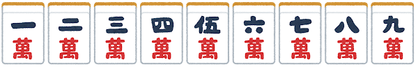
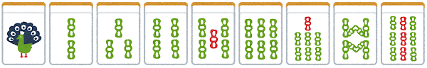

麻雀を知ってる？
牌は何？
日本では、中国で用いられるものより小さめの34種136枚の牌を使用するのが一般的である。牌の種類には萬子（ワンズ/マンズ）・筒子（ピンズ）・索子（ソーズ）・字牌（ツーパイ）がある。 (ja.wikipedia.org)
 
萬子・筒子・索子はそれぞれ一から九までの9種。 (ja.wikipedia.org)
字牌はさらに三元牌と四風牌に分かれ三元牌は白發中の3種、四風牌は東南西北の4種である。 (ja.wikipedia.org)
これら34種がそれぞれ4枚ずつ、計136枚である。 (ja.wikipedia.org)
前へ